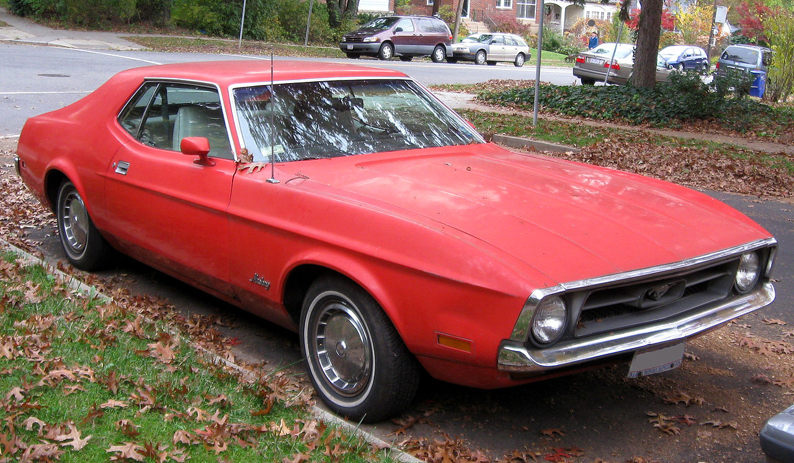
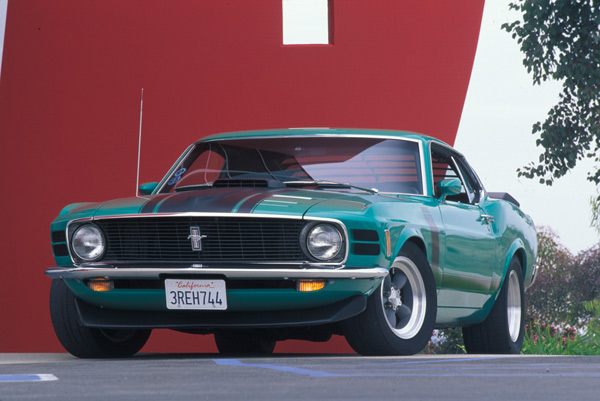
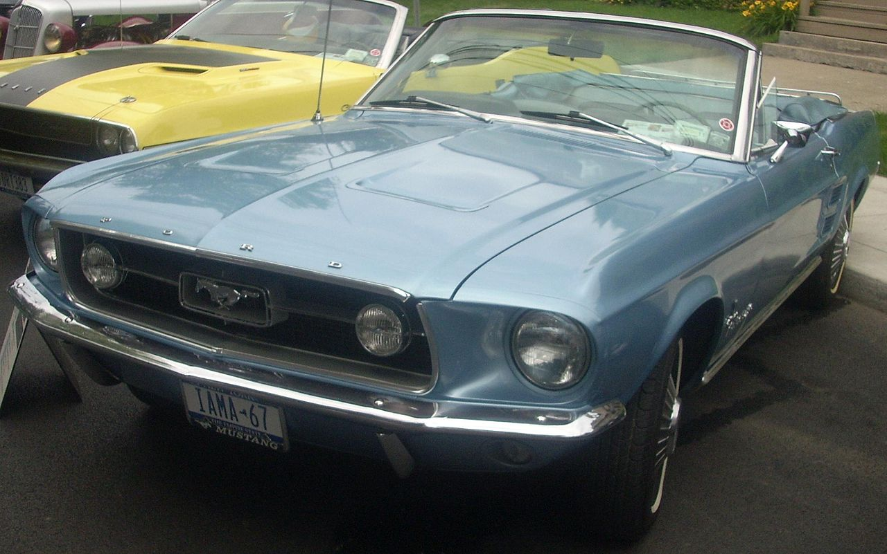
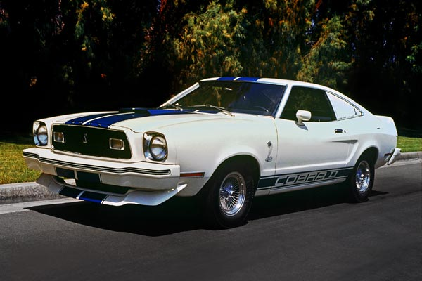
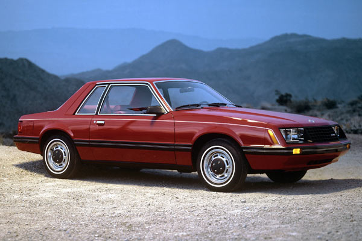
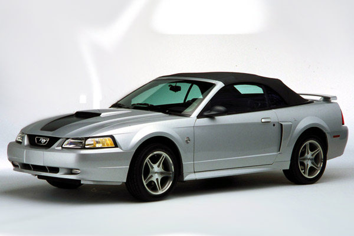

El Ford Mustang es un automóvil deportivo muscle car de dos puertas, producido por el fabricante estadounidense Ford Motor Company desde 1964.
El Mustang creó la clase de Autos Pony estadounidenses, distinguidos como cupés deportivos accesibles con capotas largas y cubiertas traseras cortas, y dio lugar a competidores como el Chevrolet Camaro, Pontiac Firebird, AMC Javelin, Plymouth Barracuda renovado de Chrysler y la segunda generación del Dodge Challenger. El Mustang también es acreditado por inspirar los diseños de cupés Toyota Celica y el Ford Capri, que fueron importados a los Estados Unidos.
Originalmente se basó en la plataforma del Ford Falcon de segunda generación, un automóvil compacto. El Mustang original de dos plazas de 1962 había evolucionado hasta convertirse en el "concept car" de cuatro plazas Mustang II de 1963 que Ford utilizó para probar como el público se interesaría en el primer Mustang de producción. El concept car Mustang II de 1963 fue diseñado con una variación de los extremos delantero y trasero del modelo de producción con un techo que era 2,7 pulgadas (6,9 cm) más corto. Introducido temprano el 17 de abril de 1964, 16 días después que el Plymouth Barracuda y, por lo tanto, denominado como un "1964½" por los aficionados, pero el modelo 1965 fue el lanzamiento más exitoso de la automotriz desde el modelo Ford A. el Mustang ha sufrido varias transformaciones a su sexta generación actual, siendo la tercera saga de Ford más antigua.
En su primer año de historia, el Mustang llegó a las 417.000. Fue en 1966 cuando se logró el millón de automóviles. Estaba disponible en dos modalidades: Hardtop y Convertible. Tenía un precio de 2.368 $.
Ford no se conformaba con estos resultados, quería exprimir aún más su coche estrella. Para ello contrató a Carrol Shelby, que crearía la carrocería Fastback, sobre la que desarrollaría su famoso Shelby GT350 con motor V8 y 306 CV de potencia, presentado en enero de 1965. Un año más tarde le tocaría el turno al modelo más emblemático de la familia, el GT500, con un V8 de 355 CV bajo su capó.
En 1969 existían 11 versiones diferentes, entre otros el Boss 302 de 290 CV, el Boss 429 de 375 CV, el Grande y el Mach I. Debido a las presiones gubernamentales por la crisis del petróleo, éste sería el único modelo que sobrevivirá hasta 1973.
  En 1974 apareció la segunda generación, basada en la plataforma ‘Arizona’ que utilizaba el Ford Pinto. Era un modelo más pequeño (48,2 cm menos de longitud) y ligero (222,2 kg menos de peso). El V8 desapareció del catálogo aunque un año más tarde volvería a escena, aunque, eso sí, con ‘sólo’ 130 CV. También estaban disponibles los propulsores de 4 y 6 cilindros, pero también de menor potencia. Para suplir esta carencia, la firma del óvalo azul introdujo interiores de mayor calidad.
A pesar del cambio de imagen y concepto, menor deportividad a cambio de mayor elegancia, el año de su estreno, Ford vendió 386.000 unidades. Su precio se situaba entre los 3.134 y los 3.674 $. En esta época, el Cobra II y el King Cobra serán dos modelos de gran importancia.
Ante la ausencia de descapotables en la gama, en 1977 Ford crea el T-Top, un techo formado por paneles de cristal desmontables.
Será en 1979 cuando el constructor americano decida darle un buen lavado de cara al Mustang, lavado de cara con el que perdería gran parte de la esencia que desprendía por los cuatro costados este vehículo. A pesar de ello, sobrevivió, ni más ni menos que 15 años sin grandes cambios en su imagen.
Realizado sobre la plataforma del Fox, era más grande y más ligero que la fase II. Con esta nueva generación, regresaron los descapotables en el 83, ausentes desde 1973. Un año más tarde apareció el modelo más carismático de la tercera generación, el Mustang SVO. Una versión con el frontal totalmente diferente al modelo base que montaba un propulsor de 2,3 litros capaz de desarrollar 175 CV.
En 1986, Ford decidió sustituir el carburador de su V8 por el sistema de inyección electrónica. Con esta nueva alimentación, el motor ofrecía 225 CV.
En los últimos meses de vida de la tercera generación, la marca de Detroit encargó una versión limitada de 107 unidades al Equipo de Vehículos Especiales. De ahí nació el Mustang SVT Cobra R, con un motor de 5 litros y 235 CV. Sobre él se realizó un gran trabajo a la hora de reducir peso. Se suprimieron diversos elementos como el aire acondicionado, sistema de audio, aislamiento, alfombrillas, moqueta y asientos traseros. Además, se le dotó de unos frenos de mayores dimensiones y de un radiador que enfriaba el aceite con mayor rapidez.
La cuarta generación del Mustang, que llegó en 1994, también se desarrollaba sobre la plataforma del Fox, pero a diferencia del modelo anterior, tenía una imagen exterior con unos rasgos más redondeados y aerodinámicos. De las 1.850 piezas que forman el vehículo, 1.330 eran nuevas.
Durante los dos primeros años, montó el mismo propulsor que hasta entonces había utilizado: el de 5 litros, pero a diferencia de los anteriores, éste entregaba 215 CV. Será el bloque que equipe el Mustang Cobra de 1995, pero con 305 CV. Un año más tarde, Ford prescindió de él y tomó el nuevo 4,6 l con un árbol de levas en cabeza. El Mustang Cobra de 1996 lo instalará, pero con doble árbol de levas en la culata. Será en 1998 cuando el 4,6 litros de 215 CV pase a tener 10 CV más.
Después de diez años en el mercado, en 1999 la tercera generación del Mustang dejaba su posición a una nueva fase. Aumentó de tamaño y sus formas eran más rudas y musculosas. El diseño, denominado ‘New Edge’ por el constructor americano, se volvió más recargado. Grupos ópticos, parrilla, capó y llantas eran de nueva factura. Por su parte, el interior recibía alguna tonalidad y cambios minúsculos en la posición de los mandos.
En 1999, el Equipo de Vehículos Especiales crea un nuevo modelo basado en el Cobra. Monta un propulsor 5.4 DOHC (doble árbol de levas) de 385 CV de potencia que va acoplado a un caja manual de seis velocidades.
En 2004, año en que se celebra el 40 Aniversario, se termina con la producción del Mustang en la planta de Dearbon (Michigan) después de 40 años de trabajo. Con este cambio tan importante, la cuarta generación del Ford Mustang dice adiós.